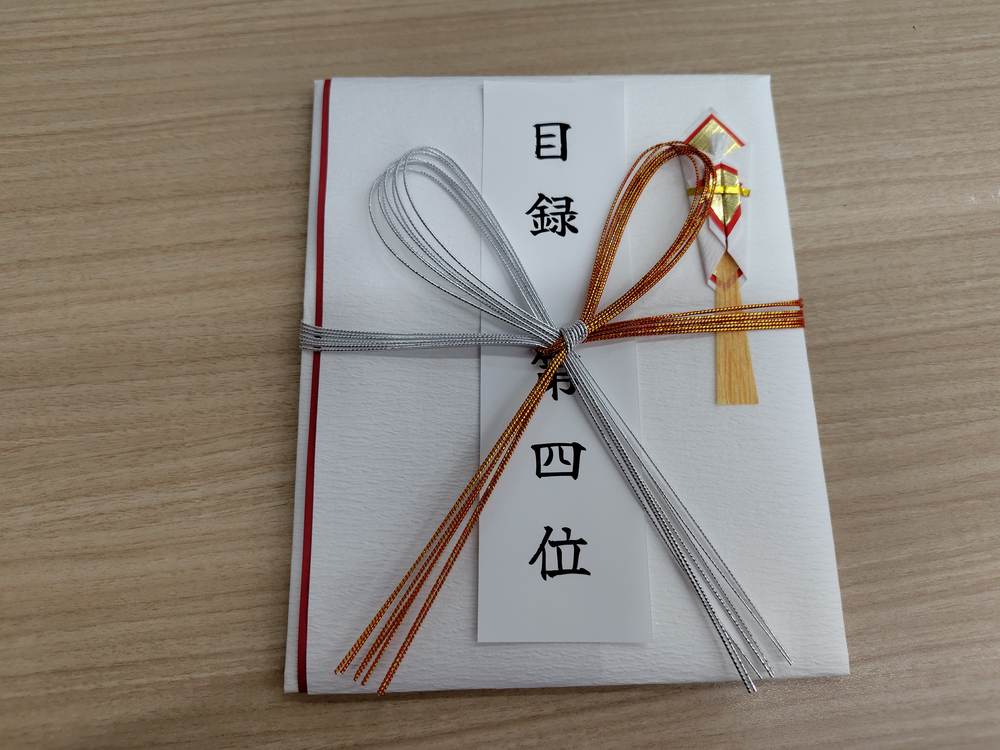

CodeQUEEN2025決勝に出場しました！【4位！】
目次
はじめに
今年もCodeQUEENに参加しました。3回目。
高校生〜社会人の女性50人が出場する大会です。
昨年は6位とギリギリ賞金がもらえず悔しい思いをし、数ヶ月ほど「賞金欲しかった霊」が自分の後ろをついてきていました。
今年は来ないでほしいと思いながら参加。
予選であるABC410は思いっきりコケました。
予選通過順位は5位でした。
ここ最近ABCでは青パフォ以上安定してきたと思っていたので悲しかった。
頑張れ私
— Ayuna (@Ayuna_gr) June 14, 2025
AyunaさんのCodeQUEEN 2025 予選 (AtCoder Beginner Contest 410)での成績：1449位
パフォーマンス：1393相当
レーティング：1802→1767 (-35) :(#AtCoder #CodeQUEEN2025予選(ABC410) https://t.co/xmjftgCWNs
決勝1ヶ月〜1週間前
参加者のレートを踏まえ、決勝では4位以内、あわよくば優勝を目指すという目標を立てることに。
今年は今まで以上に競プロ以外が忙しく、精進の時間を捻出するだけでもかなり苦労しました。
なんとか色々をお片付けし、束の間の休憩(？)として1週間前にはCodeQUEENに向けたバチャをやりました。
エディタって背景が黒いから目が休まるんですよね〜(休まりません)。
バチャ後、momoharaさんに解けなかった問題のヒントをもらい、画面を見てもらいながら実装していたが、見積もりが適当すぎ、シンプルに打ち間違いが多いなど自分でも笑っちゃうミスをしていた。ABCとか配信したら面白いんじゃない？と言われた。
たしかに私は発想がぶっ飛んでいるらしいので思考を垂れ流ししたら見どころは提供できそうだ。
偶然にも先月、諸事情で2回ほどコンテストに参加しながら画面と顔を映した動画を撮影したので見返してみたが、たしかに面白そう。
決勝前日
前日は自分のコーディング環境を整えました。
まずはターミナルで「cq」と打つだけで全問題ページにアクセスできるように。
シェルスクリプト素晴らしい。
あとは、bits/stdc++.hのプリコンパイル。
記事の通りにやったらスムーズにできた。
これでサンプルケースでガンガンデバッグしていく予定。
あとはPythonで「ma」と打ったらmap(int, input().split())、「li」と打ったらlist(map(int, input().split()))と出るように設定。
昨年と今年のICPCの国内予選前に自分のではないパソコンで環境改良(断じて魔改造ではない)をしたのが思い出された。
ICPC2024
— Ayuna (@Ayuna_gr) July 5, 2024
6完15位
事前にだれさんのPCを改良(決して魔改造ではない)
Cの考察実装(印刷待ちで遅れていたらDが解けていたらしい？)
Eの嘘解法とそのハックケースを生やす
GHIの問題の要約(役に立ったか怪しい)
というように何もしていないです
アジアまでにもっと強くならないと
そして夜は眠れませんでした。 自分は緊張しいんだなあ。
決勝当日
なんとか起床し出発。
会場の細かい位置は分からないまま家を出たが、「ソラシティ？なんか試験受けられるとこも同じ名前じゃないっけ？」という曖昧な記憶で建物に入ったら合っていた。
受付には副社長さんがいて、事前に同意書を用意し忘れた人に「アウト」と告げながら紙を渡すお仕事をしていた。
私は印刷だけしてサインをしていなかったがギリセーフ判定をもらった。
各座席には名札やTシャツなどが用意されていた。懇親会の企業ブースでも大量にグッズをもらったので持ち帰りがやや大変だった。

座席は順位順というのもあり近くには知っている人が多く、コンテスト開始まで会話を楽しんでいた。
みるみる順位を上げてきた人もいて時の流れを感じた。
自分もそういう人々のうちの一人なのだろう。
コンテストが始まってからの動きはこんな感じ。ネタバレ注意。問題はこちら。
A (0:00:44 AC)
FA。ソートする。久しぶりのPythonでちょっと手が止まったが、それでもスピード勝負はそこそこ強いのかもしれない。あと前日の環境改良のおかげ。
B (0:01:45 AC)
FA2。61秒でACは今考えると速すぎないか？となっている。
問題文は「ちょうどS」あたりからちゃんと読んでない。
計算量削減初心者が学習すべきド典型問題。
緑になりたてのときにこれに似た問題に出会い、大抵は茶色のうちに触れるはずの計算量という概念をようやく理解したきっかけになった好きかつ苦手なタイプの問題。
C
分からなかった。読み終わって30秒で飛ばすことを決心。
D (0:07:03 WA)
にぶたんだー！と飛びついた。嘘でした。
平均値は長さ固定する典型が真っ先に出てそれに固執してた。
E (0:11:59 WA)
中国剰余定理は最小公倍数を直接求めることができないので即捨て。でもアイデアのベースにはなる。
Bを素因数分解して互いに素でないもののタイミングがずれていたらまずい、みたいな判定をしたつもりだったがWA。
このあたりで初めて自分の提出履歴と順位表を確認し、DのWAに気づき、CまでACしている人を数人観測。
DEに提出している人は他にいなかったので、いかに私がスピード感を持って変なムーブをしていたかが分かる。
一度提出はしたもののなぜWAなのか分からずパス。
C (0:19:46 AC)
絵を描いたら式が簡単だと気づきすぐ実装しAC。K+1をたくさんかけて階乗もかけるだけだった。
F (1:19:53 AC)
CのAC後、30分ほどDEを眺めていた。
Dのにぶたんが嘘だということには気づいたがじゃあどうするんだとなっていた。Eも分からないので諦めてFを読んだところ本質はすぐ分かったので実装することに。
包除原理をベースに連結リストっぽくできるか判定を頑張る。実装を頑張る。
D (1:27:36 AC)
よく考えたら値から平均を引く典型があったのを思い出し、累積和の条件を求められた。
ここで重要なのは大小だけで値は関係ないので座標圧縮すれば良いのだけれど、即「動的セグ木の出番だー！」となり自分のライブラリを捜索。
運が良いことにちょうど1週間前にライブラリ盆栽欲が高まり作っていた。
が、それは別環境で作業していたため当日コーディングしていた環境になく、リモートから探し当てた。
前日に環境構築したのにライブラリを最新版にするのを忘れていたみたい。
少し時間ロスしたがまあ良い。
G
ここで残り30分を迎え、順位表が凍結された。
順位表を見て、Eを解けてもあまり順位が変わらないがGを解けたら優勝できそうということでGを主に見ていた。
一応一個くらい順位が上がるかもと思いEも少し見直していたが、やはりなぜペナったのか分かっていなかった。
諦めてGに戻り、愚直にやると頂点数がO(N^2)になるよねと絵を描いていた。
ABC260-Fが頭の片隅に残りながら青diff典型を列挙していたところ、平方分割でいけるのか？と思った。
元の頂点をルートN頂点にグループ分けし、O(N√N)頂点に頂点倍加し、2グループから1頂点ずつ選ぶ場合と1グループから2頂点選ぶ場合の2回、ダイクストラ法で求めれば良いと思っていた。
TLは4秒と通常より長いが高速化は頑張る必要がありそうだと思いながら実装。
この方針はかなり惜しく、ABC245-Gのtatyamさんの解説がこの方針の平方根を削って対数をつけたような方針らしい。
まるでセグ木を知らない人が平方分割で区間クエリに答えているようなやり方を自分がしていたことが分かった。
momoharaさんが想定解と同じ解き方をしていたようで、後からそれを聞いて思ったよりシンプルだったとがっくり。
Hは時間がなくてコンテスト中に読んでいなかった。
コンテスト後に他の参加者が取り組み続けていた様子を見ていただけだが、基本一筆書きで次数3になる端っこで少し損するっぽい感じがする。
まだちゃんと取り組んでもいないので見当違いだったらすみません。
こう自分を振り返ると1年前と比べて過去に見た問題と紐付けたり典型を典型として認識したりできるようになっていることが分かる。
今でも自分の知らない典型を自力発明してACすることはあるが、そのレベルが1段階上がっている。
1年前に苦しんでいたのは無駄じゃなかったと感じる。
他の典型に飛びついて嘘解法に走りそうになることは永遠の課題。
こればかりは学び続けて飛びつく典型のレベルを上げるしかない。
コンテスト終了後〜表彰
凍結解除前の順位表を見て、5位以内は確定していることを確認。
問題について何人かで解法を共有。
momoharaさんの凍結後提出がACかどうかが自分の順位のキーポイントだったがあえて聞きに行かないことにして休憩時間を過ごした。
結果は4位。3年目にしてやっと賞金をもらえた。
実力で賞金もらえるのはすごく嬉しい。
前に出て目録を受け取るのに緊張して、コメントも相当早口になってしまった。

懇親会
懇親会、写真撮るの忘れてた…
中央にご飯がずらっと並んでいた。
昨年は女性向けに合わせていたのか健康そうなものが多いイメージだったが、今年はお肉が多くて嬉しかった。お寿司も並んでいて、私は迷わずかっぱ巻きを食べた。
ありがたいことに「Ayunaさんですよね！？」と相手から話しかけてくれることが多くてとても嬉しかった。
前回のCodeQUEENではchokudaiさんに会うのは2回目で、その時は大物にまた会えたうれしー、どきどき！など思っていた。
だが、そこからなぜかこの1年で会うことが数回あったため自分の中では慣れてしまい、他の参加者から2ショットやサインを求められる様子を見てそういう方だったと再認識。
企業ブースにも訪問。
オンサイトに何回か出させていただく中で関わったことのある企業が多かった。
就活をしていてもやはり一度接触していると視界に入ってきやすいもんで、こういう大会でスポンサーをするのはプログラミング経験者などターゲットを絞っている企業にとっては広報効果抜群だなあと消費者側からの視点から感じた。
初めてのオンサイトでは就活をしていない年代の方が多数派な環境で協賛の効果を十分に回収できるのか疑問に感じていたが、いざ自分が就活をする学年になり企業を見てみると、単純接触効果というのは自分が考えていたよりもどうも強いらしいということを身をもって感じた。
女子部オフ会
懇親会後は女子部オフ会に参加しました。
お店への移動中にAstroseekさんと会うのがその日で2回目だったことを知った。
なぜか前から関わったことがある気になっていた。
趣味の話、人生の話を話して聞いて鴨肉を食べました。
今年高1になったので初めてCodeQUEEN出れましたという人、就職した人、勉強頑張っている人など人々のライフステージの変化を感じた。
おわりに
今、ありがたいことに私にとってオンサイトに出やすい状態になっていて、予選ありのオンサイトはそもそも開催があまり多くないはずが年に複数回出ることができています。
再来年くらいになったら年一回、というかCodeQUEENだけ(もし続けていただけるのであれば)になると思われるので、今一度改めて強い人が集まる会が開催されそこに自分が参加できるということに感謝です。
懇親会のときに何度か機会を伺ったもののkenkooooさんに直接感謝の気持ちを伝える時間を作れずそこが一番の後悔。来年伝えに行きます。
改めて4位、悔しい気持ちもあるがひとまず入賞できて嬉しい。
もちろん来年はより高い順位へと行きたい気持ちもあるが、性別を限定しなくても強いと思われる人になりたいという気持ちもある。
結局強くなりたいだけか。強くなろう。